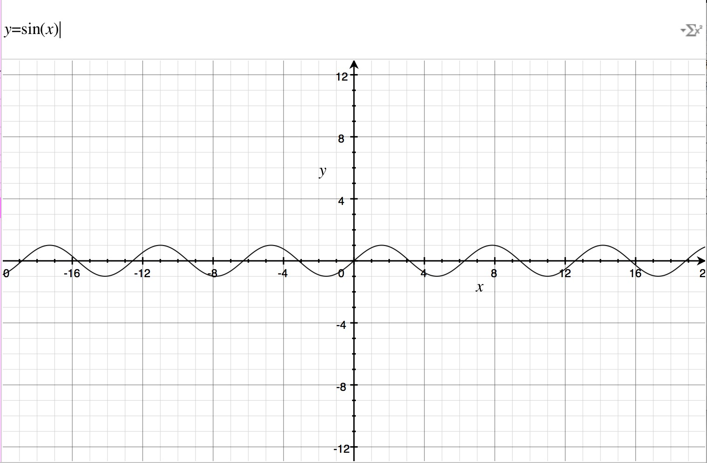
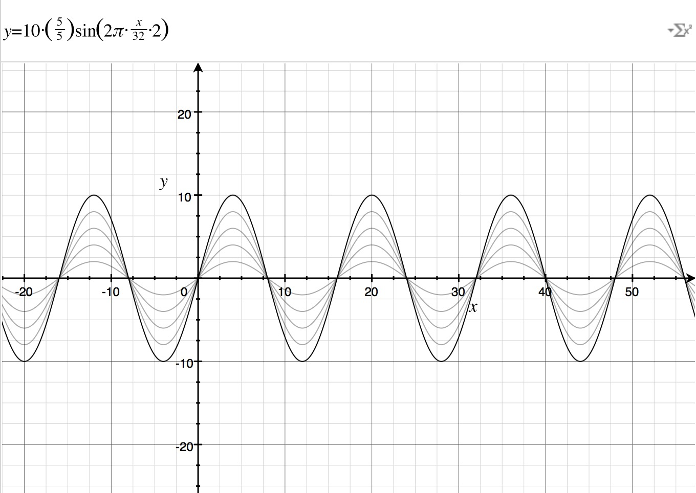
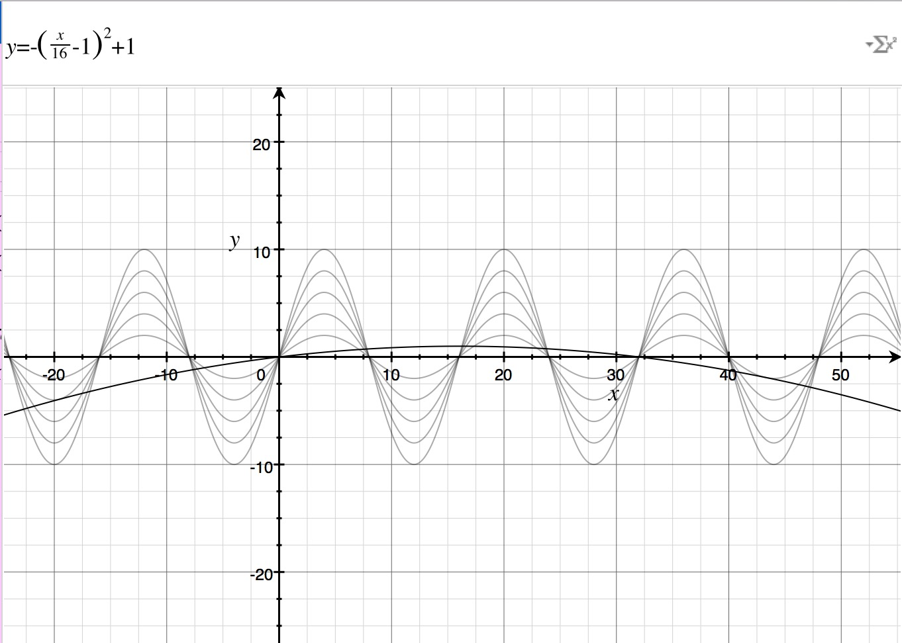
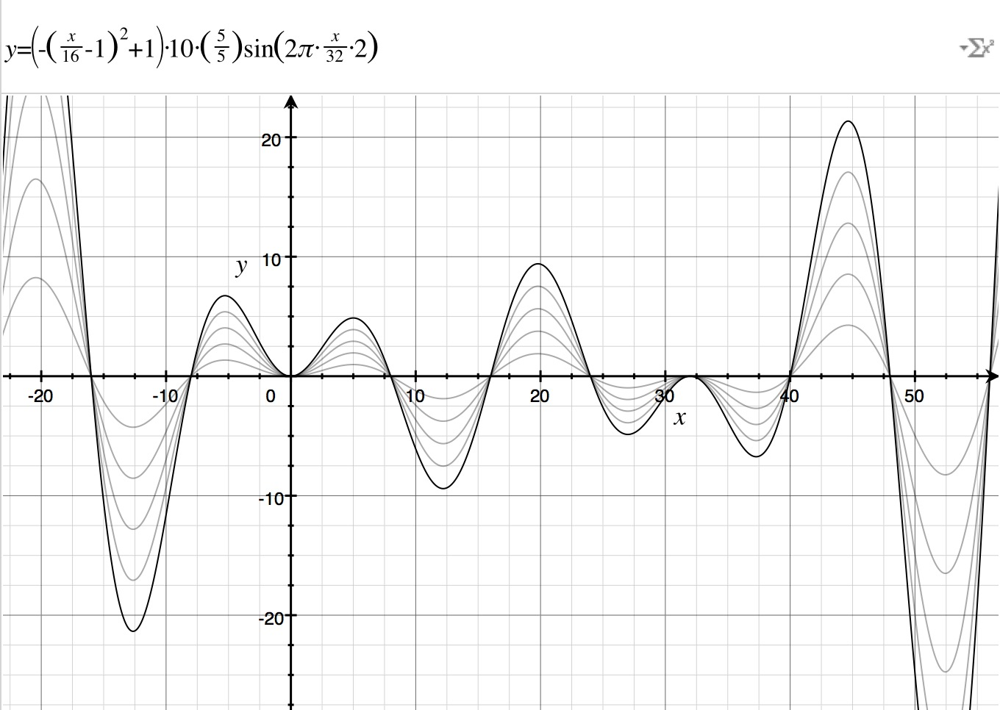

在上一篇研究了动效之后，这段时间一直在琢磨如何做一些更有趣的东西，所以，昨天我开源了一个新的声波库——Waver，拥有非常动人的声波效果，在此要感谢 SCSiriWaveformView 这个项目，Waver 在他的基础上改成了 Block 的使用方式，同时声波采用我最熟悉的 UIBezierPath 和 CAShapeLayer 实现，并做了一些逻辑上的优化，实现了 8 倍的性能提升。
采用 UIBezierPath & CAShapeLayer 的另外一个好处是更方便对初始形态进行调整，像 Siri 那样可以从圆形变成线条。
不过对此而言，怎么使用不是最重要的，重要的是怎么实现这样的效果，So，Let's have some fun！
在大概半年多前的时候，iOS 群里曾有过关于如何实现像 Siri 的声波效果的讨论，当时提出的第一个解决方案是 FFT ，网易公开课有斯坦福相关的课程。
傅立叶原理：任何连续测量的时序或信号，都可以表示为不同频率的正弦波信号的无限叠加。
不过解释或者推导再应用这个原理显然不那么有趣，我想从一个纯粹的逻辑角度出发去解决这个问题。
Mac 上有个非常有趣的软件，叫做 Grapher，你可以在里面输入我们玩的公式，也可以直接下载我们的试验文件。
长按 Home 叫出 Siri，千里之行的第一步就是在屏幕上画出一个从左边缘到右边缘的周期性线条。
要不就试试三角函数 Sin 呗。

对这个基本函数我们需要以下几个操作做基本调整
函数周期变化的 x 范围限制
符合手机屏幕的宽度，假设为 32。
在 x 内变化的周期数限制
假设我们需要 2 个周期变化。
波峰限制
我们需要峰值不超过我们 UIView 容器的高度，所以假设 UIView 高是 20，那么峰值应该限制在 10 以内。
五个波纹
依次波峰递减 1/5。

上面已经非常接近我们想要的效果了，但是还有一个比较重要的，就是最终出来的效果应该是越靠近屏幕中间的位置，波峰越大，靠近屏幕边缘的地方，无限接近于静止。
那么我们还需要一个参数（一元二次方程）来调整。
满足在 x 的范围内，值从 0 ~ 正数值变化。

那么这两个函数相乘的时候，就能实现我们想要的效果

如何让这个动起来呢？
满足以下两个条件
一个用来调整波峰的参数
把声音的音量处理后作为参数传入，于函数相乘。
循环进行 x 变化的参数
使用 CADisplayLink 作为循环器，声明一个位移量，每次循环的时候进行递增，然后传入我们的函数。